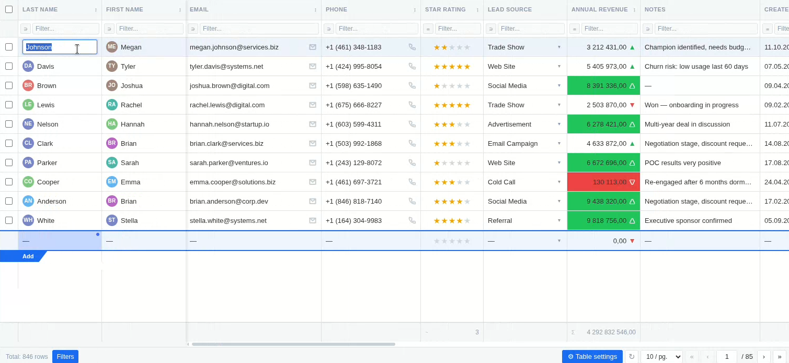
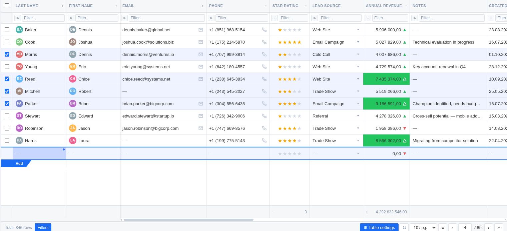
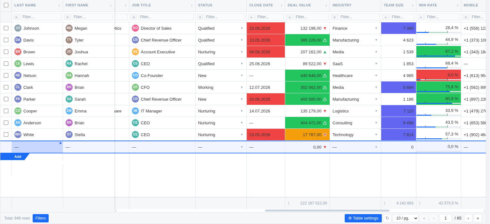

SETKI Guide
Everything you need to use and configure SETKI Grid, on one page. Last updated: 2026-10-30
On this page
Part 1 — Using the grid
Part 1 — Using the grid
For everyone who opens SETKI Grid inside the CRM.
1. What is SETKI Grid
SETKI Grid replaces the standard CRM list view with a fully editable, high-performance data table. It runs right where the module's list view normally appears — leads, deals, contacts, or any other module your administrator has configured. Everything below happens without leaving the CRM.
2. Viewing your data
The grid loads your records as rows and fields as columns, just like the CRM list view — but faster and richer:
- —Handles large modules smoothly — 500+ rows and 20+ columns without slowdown
- —Choose how many rows appear per page (10 / 25 / 50 / 100 / 200) if your administrator has made this adjustable
- —Click the refresh control to reload the latest data without reloading the whole page
- —Some columns may be "frozen" by your administrator — they stay visible on the left while you scroll horizontally through the rest
3. Editing records inline
Double-click any cell to edit it directly — no need to open the record. Press Enter or click away to save; your change appears immediately, and rolls back automatically if the save fails.

Every field type edits the way you'd expect:
- —Text, numbers, currency, percent — type directly
- —Picklists and multi-select — a dropdown with search opens
- —Lookup fields — search across your CRM records to link one
- —Dates — a date picker opens
- —Checkboxes — click to toggle
- —Email / phone / URL — edited as text, validated, and clickable when not editing
If a field is required, the grid won't let you save it empty. If your administrator has set the grid to read-only, cells won't open for editing at all.
4. Bulk editing multiple rows

Select several rows using the row checkboxes, then change one field — the new value is applied to every selected row at once. Useful for updating a stage, owner, or status across dozens of records in seconds instead of opening each one.
5. Filtering and sorting
- —Use the filter row under the column headers to filter by any field. Available operators depend on the field type — contains, equals, greater/less than, starts with, ends with, and more
- —Click a column header to sort by it; you can sort by more than one column at a time
- —Your administrator may set default filters or sort order for the team — these apply automatically when you open the grid
6. Seeing trends without leaving the grid

Where your administrator has configured them, columns can show:
- —Sparklines — a small line chart in the cell, built from related data. Hover to see exact values at each point; use the refresh control to pull the latest data into the chart
- —Color thresholds — a cell's background changes color when its value crosses a defined limit, so outliers stand out at a glance
- —Deadline highlighting — date fields turn yellow when due today and red when overdue
- —Stock mode — numeric trend fields show an up or down arrow with color instead of a plain number
- —Progress bars — percent fields render as a filled bar instead of a number
- —Star ratings — numeric fields render as ★★★☆☆
7. Column totals
Numeric columns can show a totals row at the bottom of the grid — Sum or Average, whichever your administrator has set for that column.
8. Switching between tabs
If your administrator has set up more than one table in this widget — for example, the same module viewed with different filters — a sidebar of tabs appears on the left. Click a tab to switch tables. Each tab keeps its own column layout, filters, and settings independently.
You can flag any tab for yourself using the flag icon in the sidebar. This is a personal marker, saved in your browser — it doesn't affect what your teammates see.
9. Your view is your own
Column width, column order, page size, and row sort order that you set yourself are remembered per-device — they don't affect what your teammates see, and they persist the next time you open the grid on the same device.
10. Language
SETKI Grid's interface automatically matches your browser language. Supported: English, Russian, Hindi, Spanish, Portuguese, German, French, Italian.
11. Free vs. Pro access
Organizations with up to 3 assigned users get full functionality at no cost. From the 4th user, access is seat-based — your administrator purchases and assigns seats. If you see a message asking you to contact your administrator, it means your organization needs an additional seat or one hasn't been assigned to you yet. This doesn't affect what the grid can do — Free and Pro have identical functionality, the difference is purely how many people can use it.
Part 2 — Configuring SETKI Grid
For administrators. The settings panel (⚙) is restricted to the "Administrator" CRM profile — see §1.
1. Opening settings
The settings panel (⚙) appears when you hover over the grid, but only for users whose CRM Profile is "Administrator" — this is hardcoded, not configurable. Everyone else never sees the icon. Settings are saved to your CRM organization and apply to every user, not just you. Changes preview live in the grid as you edit — nothing is applied for other users until you click Save.
2. Columns
Pick which fields of the module appear as columns. Hidden columns are removed entirely — not collapsed, not accessible to users. "Select all" / "clear all" toggles are available. If every column ends up hidden, the grid shows an "Access restricted" placeholder instead of an empty table — useful in combination with roles, to fully lock a profile out of a module while keeping the tab itself visible.
For each visible column you also set whether it's editable — users can change values in editable columns inline; other columns are view-only for everyone, regardless of their CRM edit permissions on that field. The same "select all" / "clear all" shortcut applies to the Editable checkbox. System columns are never editable, no matter how this checkbox is set.
3. Pinning columns
Choose columns to pin to the left — they stay visible while users scroll horizontally through the rest. Useful for identifying columns (name, stage) on wide tables. The default column order comes from the CRM; within the pinned and unpinned groups, users can still drag columns into their own preferred order, saved per-device (see §9 in Part 1).
4. Filters and sorting
- —Set predefined (admin) filters on any column — including columns you've chosen not to display. These apply automatically when the grid loads, and work on both text and numeric fields; you can set more than one
- —You can hide the filter row entirely — predefined filters still apply, users just can't add their own. When the row is visible, any filter a user types in takes priority over the admin filter on that column for as long as they keep the table open, then reverts
- —Set a predefined sort order the same way, with the same option to hide the sorting control from users while keeping the order enforced — a user's own sort choice likewise takes priority only while their session is open
5. General settings
- —Table (module) — which CRM module this widget displays; the list is pulled automatically from your CRM
- —Default rows per page
- —Totals row — turn on/off, and per numeric column choose Sum, Average, or none. Totals are calculated across the whole module, respecting any active filters
- —Add-row control — show or hide the row used to create new records, independent of column editing rights
- —Multi-row (bulk) editing — enable or disable the row checkboxes that let users change one field across many records at once
- —Table height — fixed pixel height or fill the container
- —Read-only mode — switches the entire grid to view-only for every non-admin user, regardless of the per-column editable setting
6. Number & percent visualization
Available per numeric column, shown only for columns where the field type applies:
- —Star rating display for numeric fields
- —Stock mode — replaces the number with an up/down arrow and color, with a custom (optionally negative) threshold. For percent columns the threshold is fixed at 0
- —Color thresholds — set an upper and lower bound (can be negative) with custom colors; cells outside the range are highlighted (available for both number and percent columns)
- —Decimal places — configurable per column (number and percent)
- —Suffix (numbers only) — e.g. a unit of measurement
- —Percent columns additionally render as a progress bar
7. Dates and text
- —Deadline highlighting for date columns — on by default. Pick the color for "due today" and "overdue" with a color picker (defaults: amber for today, red for overdue). Column type (date vs. date-time) is detected automatically from the CRM field
- —Avatars for text/lookup/owner fields — on by default, shows a colored circle with initials next to the name
8. Charts (sparklines)
Any column can render a small line chart in the cell instead of a plain value, built from data in another module. Open that column's chart settings and fill in:
- —Source table (module) — where the chart's data points come from
- —Value field (Y) — the numeric field that gets plotted
- —Label field (X) — optional, e.g. a date, used to label each point
- —Sort order for the points, and the maximum number of points (default 100 — lower keeps the chart more compact)
- —Filters — to show only data related to the current row (rather than the whole module), add one or more filters (source field + operator + current row's column) with "+ Add filter"
- —A checkmark at the bottom confirms when the configuration is valid — tick "Enable chart" to turn it on
Once saved, the chart in each cell is a static snapshot — it does not refresh on its own. Users with edit rights on that record see a ↻ refresh control inside the cell to pull the latest data; hovering a point shows its exact value in a tooltip.
9. Presets
A preset is a saved snapshot of the full configuration above. Presets are global — any administrator can save, apply, or delete any preset. Applying a preset copies its settings into the current draft (visible in the live preview); nothing is written to your organization until you save. If you, as an Administrator, assign a preset to yourself, the settings panel still shows and edits the base org-wide settings (flagged with a yellow warning banner) — not the preset itself.
Typical use: build separate presets per team or per module — e.g. a warehouse view, a sales pipeline view, a read-only view for external contractors — and switch between them in one click instead of reconfiguring manually.
10. Roles — assigning presets per profile
The Roles tab maps each CRM Profile (Administrator, Standard, or any custom profile in your org) to a preset. When a user opens the grid, SETKI checks their Profile and automatically applies the mapped preset — no per-user setup needed, since the CRM already assigns Profiles to users.
- —Profiles are pulled automatically from your CRM organization
- —A profile left as "— no assignment —" falls back to the base configuration (the settings above, not a preset)
- —A profile marked with a warning icon existed in a previous mapping but no longer exists in your CRM (renamed or deleted) — remove it with the ✕ next to it
This is access within the grid (which columns, filters, edit rights a role sees) — not licensing. It's independent from Free/Pro seat assignment below. Note the settings button (⚙) itself is always restricted to the Administrator profile — that isn't configurable here.
11. JSON editor
Every setting above is also exposed as a single JSON document, editable directly with search and one-click copy. It's two-way: editing a toggle in the GUI updates the JSON immediately, and editing the JSON updates the GUI. Useful for copying a full configuration between widgets, or for AI-assisted config generation. A built-in validator highlights invalid input as you type.
12. Multiple tables (Tabs)
If one widget placement should show more than one table — for example the same module with different filters for different teams — administrators can add tabs from the sidebar that appears next to the grid:
- —Click the + tile at the bottom of the sidebar to add a tab
- —Hover a tab and use the flyout panel — ✎ to rename, 🗑 to delete (the first/default tab can't be deleted)
- —Each tab has fully independent settings — module, columns, filters, everything in this guide is configured separately per tab
- —You can restrict which roles see which tabs; administrators always see every tab regardless of that setting
Everyone can switch between the tabs they can see; only administrators can add, rename, or delete them. Any user can also flag a tab for themselves (⚑ in the sidebar) — a personal marker saved in their browser that doesn't affect what anyone else sees.
13. Managing access — Free tier and Pro seats
The License tab shows a different view depending on whether your organization has a Pro subscription:
Free tier (no license key entered)
The first 3 users of your organization by account creation date get full access automatically (this includes the super admin, who is typically the oldest account) — no configuration needed. This tab just shows you who those 3 are (read-only) and a counter. To extend access beyond 3 users, purchase a Pro subscription and enter the license key here.
Buying seats
- Click "Get a license" in the License tab — this opens setki.dev
- Choose your CRM, a plan, and the number of seats. Seats don't need to match your headcount — buy only for people who'll actually use the grid. A purchased seat count replaces the 3 free seats rather than adding to them, so count everyone who needs access, including those first 3. Annual billing costs less than monthly
- Check out and pay — handled by LemonSqueezy, by card or PayPal
- LemonSqueezy emails an activation key to the address used at checkout
- Paste that key into the License tab's key field and save — a key activates for one organization on one CRM only
Pro tier (license key entered)
- —A checklist of every user in your org — check the ones who should have Pro access, up to the number of seats you purchased
- —Saving the key and saving seat assignments are separate actions (separate buttons)
- —"Refresh limit" re-checks how many seats you've purchased — use this right after buying additional seats
- —"Remove key" (with confirmation) reverts the organization to the Free tier rules — the 3 free seats then go to the earliest-created users, same as above
Canceling
First remove the key in the License tab, then click "Manage subscription" — it redirects you to your LemonSqueezy customer portal, where you cancel the subscription itself. Both steps are needed; removing the key alone doesn't stop billing.
"Remove key" does not cancel your subscription. It only disconnects SETKI Grid's check against that key — your organization immediately reverts to Free tier access rules inside the widget. LemonSqueezy keeps billing you until you cancel the subscription separately, either through the LemonSqueezy customer portal or by contacting dev@setki.dev. The confirmation dialog in the widget repeats this warning before you can proceed.
See the Terms of Service for billing details.
Need help?
For anything not covered here, email us at dev@setki.dev.